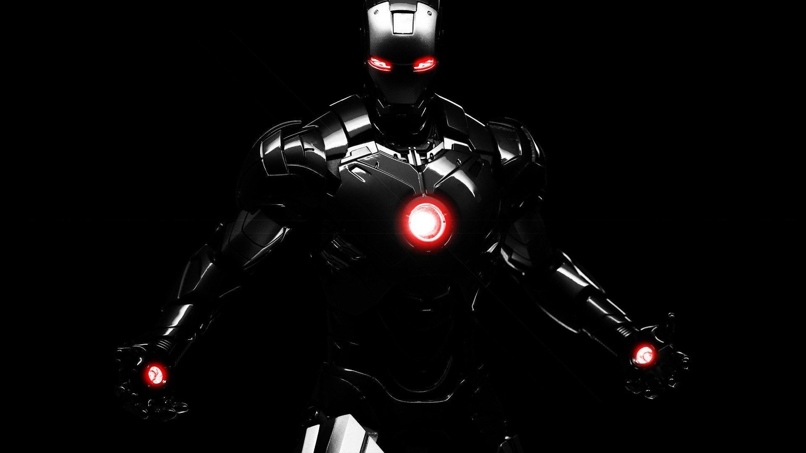

Estadisticas Municipios
Acerca de

JAMES RODRIGUEZ CASTRO
Tecnico Electrónico, empleado de Operaciones Genrales Suramericana en el cargo Auxiliar CNM, velamos por la eficiencia en la prestación de los servicios de Autos y Hogar solicitados por nuestros clientes ante una emergencia.